5.6. NREM transients
In this section we'll use the
SPINDLES
command to detect spindles (and slow oscillations) during N2 sleep.
We'll briefly examine:
-
the group-level average topography of spindle and slow oscillation (SO) occurrence and morphology,
-
individual variation in spindle metrics and how this may interact with spindle detection parameters,
-
and how spindles and SO are temporally coupled,
Note that some of the issues touched on this in section raise questions that are beyond the scope of this didactic walkthrough (and are active areas of research). The intention is to orient the reader towards at least considering some of the issues and to explore the outputs of the core commands.
Event detection
First, we'll detect spindles with the default settings, targeting both slow (target frequency of 11 Hz) and fast (target frequency of 15 Hz) spindles. This command may take some time to complete, as it runs for all channels: take a coffee break or have lunch while this runs...
luna c.lst -o out/spindles1.db \
-s ' MASK ifnot=N2 & RE
CHEP-MASK sig=${eeg} ep-th=3,3
CHEP sig=${eeg} epochs & RE
SPINDLES sig=${eeg} fc=11,15 so mag=2 nreps=1000 '
Detection settings (a.k.a. magic numbers):
-
slow and fast spindles are detected based on target/center frequencies of 11 and 15Hz, but implicitly the wavelet spans a broader frequency range
-
a main threshold for the wavelet coefficients (that index spindle activity) of 4.5 times the mean (
th) -
the core interval of a spindle must be at least 0.3 seconds (
min0) whereas the entire interval including flanking regions must span at least 0.5 seconds (min) -
the flanking region must be at least twice the mean wavelet coefficient (
th2) -
spindles within 0.5 seconds are merged (
merge) and overall, spindles cannot exceed 3 seconds (max) -
slow oscillations (given
so) detected based on zero-crossings for a band-pass filtered signal (0.5 - 4 Hz by default) -
intervals between consecutive positive-to-negative zero-crossings that have both a maximum negative peak and peak-to-peak amplitude that is at least twice (
mag=2) the median are identified as slow oscillations (other heuristics based on absolute amplitude and other duration/frequency criteria are also possible but not used here) -
nrepsindicates that we should evaluate spindle/SO coupling metrics empirically, using 1000 randomized (surrogate) datasets
Optimal parameter settings
The parameter settings used above largely correspond to default settings in Luna. This does not mean that they are the optimal settings for all scenarios. After all, this is why there exist options to change them, as opposed to these values being hard-coded in the algorithm... Although beyond the scope of this walkthrough, it can often be useful to perform sensitivity analyses, or rely on other criteria to help to optimize parameters. (In the future, we aim to post a vignette on this set of issues on the Luna website.)
We'll consider a subset of the per-individual statistics for spindles (we'll review SO and coupling metrics later in this step):
| Metric | Description |
|---|---|
DENS |
Density, count per minute |
AMP |
Mean spindle amplitude (peak-to-peak, uV) |
DUR |
Mean spindle duration (secs) |
FRQ |
Mean spindle frequency (Hz) |
NOSC |
Mean number of oscillations per spindle (N) |
CHIRP |
Mean spindle chirp (log-scaled change in frequency) |
Extracting these into a text file:
destrat out/spindles1.db +SPINDLES -r F CH -v DENS AMP DUR FRQ NOSC CHIRP > res/spso.spindles
In R:
d <- read.table( "res/spso.spindles" , header=T , stringsAsFactors=F)
We can confirm we have the expected N=20 observations per channel/spindle frequecy combination:
table( d$F , d$CH )
AF3 AF4 AFZ C1 C2 C3 C4 C5 C6 CP1 CP2 CP3 CP4 CP5 CP6 CPZ CZ F1 F2 F3 F4
11 20 20 20 20 20 20 20 20 20 20 20 20 20 20 20 20 20 20 20 20 20
15 20 20 20 20 20 20 20 20 20 20 20 20 20 20 20 20 20 20 20 20 20
F5 F6 F7 F8 FC1 FC2 FC3 FC4 FC5 FC6 FCZ Fp1 Fp2 FPZ FT7 FT8 FZ O1 O2 OZ P1
11 20 20 20 20 20 20 20 20 20 20 20 20 20 20 20 20 20 20 20 20 20
15 20 20 20 20 20 20 20 20 20 20 20 20 20 20 20 20 20 20 20 20 20
P2 P3 P4 P5 P6 P7 P8 PO3 PO4 POz PZ T7 T8 TP7 TP8
11 20 20 20 20 20 20 20 20 20 20 20 20 20 20 20
15 20 20 20 20 20 20 20 20 20 20 20 20 20 20 20
Spindles
Group summaries
Typically, given these default parameters, adults have on the order of 2-3 spindles per minute during N2 and typically more fast spindles. We can have quick look at the spindle density (count per minute) distributions (over all channels and individuals) to check this looks broadly sane:
par(mfcol=c(1,2))
hist( d$DENS[d$F==11], breaks=20, xlab="Slow spindle (SS) density", main = "", col = "darkorange" )
hist( d$DENS[d$F==15], breaks=20, xlab="Fast spindle (FS) density", main = "", col= "cadetblue" )
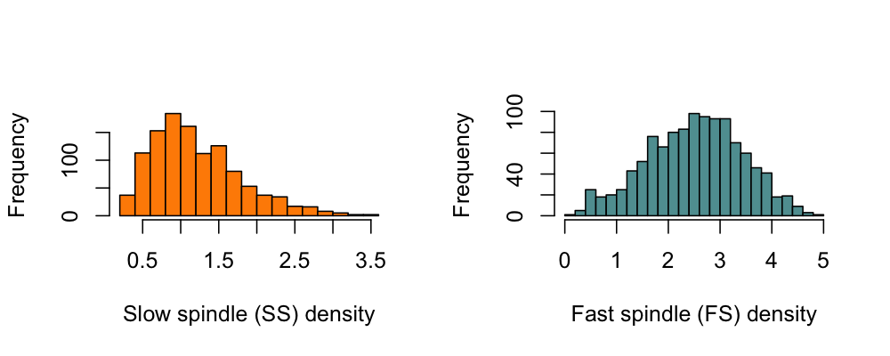
That is, on average, we see something on the order of 1-2 slow spindles per minute, and 2-3 fast spindles per minute, although these is some degree of variation (that presumably driven by both individual- and channel-specific factors). We can create similar histograms for other metrics:
Spindle amplitude (AMP; in micro-volts):
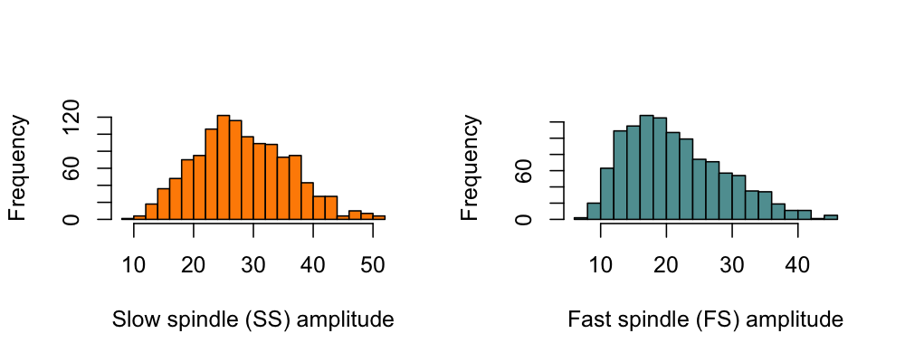
Mean number of oscillations (NOSC):
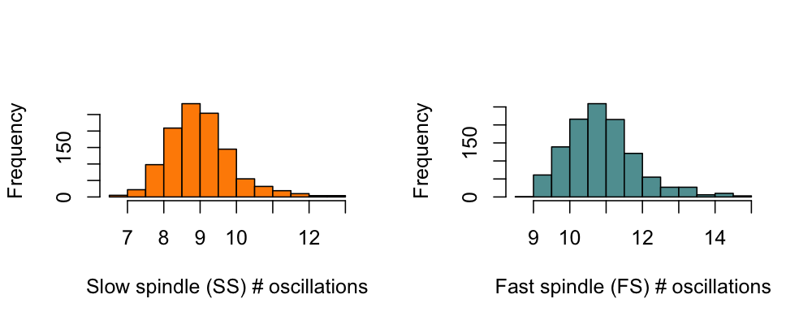
Mean spindle duration (DUR; in seconds):
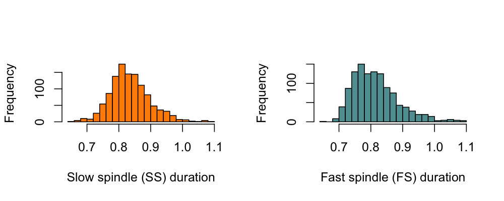
Spindle frequency (FRQ, in Hz: note that this doesn't show the same
type of normal/unimodal distribution as for the other metrics):
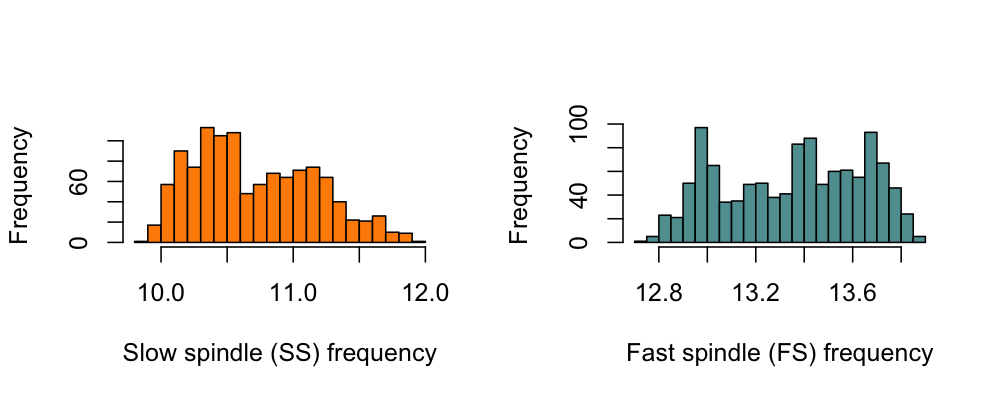
Mean spindle chirp (CHIRP; log-scaled difference in frequency
between the first and second half of each spindle, whereby negative
values imply intra-spindle deceleration):
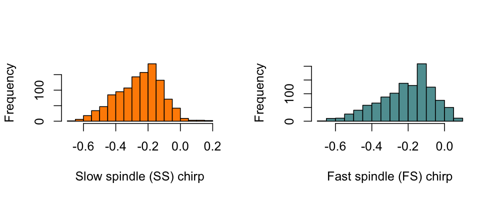
Group topographies
To examine topographical effects in more detail, we'll next create
table of means stratified by channel and spindle type for these metrics
(using R's aggregate() function):
vars <- c("DENS","AMP","DUR","FRQ","NOSC","CHIRP")
a <- aggregate( d[,vars], by = list(F = d$F, CH = d$CH), FUN = mean, na.rm=T)
The data frame a has 114 rows (57 channels for two frequencies). To
plot these, we'll use ltopo.heat() from lunaR (with lower-to-higher
values going from blue-to-red):
par(mfcol=c(3,6) , mar=c(1,1,1,1) )
for (v in vars) {
plot( c(0,1),c(0,1),type="n",axes=F,xlab="",ylab="")
text(0.5,0.2,v)
for (f in c(11,15))
ltopo.heat( a$CH , a[,v] , f = a$F == f , sz=1.2 , show.leg=F )
}
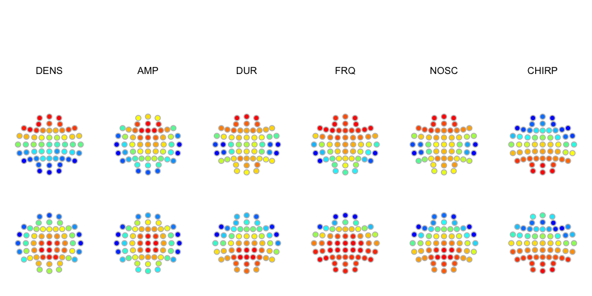
The top row is for SS, the bottom row is for FS. In general:
-
we see the expected frontal predominance of slow spindles, and the central-parietal predominance of fast spindles
-
we also see left-right symmetric topographies for all spindle metrics
-
with the exception of chirp, we see qualitative differences between fast and slow spindles for the regions of highest amplitude, duration, frequency and number of oscillations, all of which generally trend with the frontal/central distinction observed for spindle density
Slow oscillations
Next, we'll turn to the slow oscillations (SO) also detected as part
of the SPINDLES command (evoked by the so option):
destrat out/spindles1.db +SPINDLES -r CH > res/spso.slowosc
The primary SO metrics (defined per individual, per channel) are:
| Metric | Description |
|---|---|
SO |
SO count |
SO_RATE |
Rate of SO (count per minute, i.e. density) |
SO_AMP_P2P |
Mean SO peak-to-peak amplitude (uV) |
SO_AMP_NEG |
Mean SO negative peak amplitude (uV) |
SO_SLOPE |
Mean negative-to-positive peak slope (uV/s) |
SO_DUR |
Mean SO duration (s) |
In R, we'll load these metrics and create a table of means (per channel):
d <- read.table( "res/spso.slowosc" , header=T, stringsAsFactors=F)
vars <- c("SO_RATE","SO_AMP_P2P","SO_DUR","SO_SLOPE")
a <- aggregate( d[,vars] , by = list( CH = d$CH ) , FUN = mean , na.rm=T)
head(a)
CH SO_RATE SO_AMP_P2P SO_DUR SO_SLOPE
1 AF3 13.18422 79.60095 0.8592176 264.4100
2 AF4 13.36305 80.86763 0.8438011 273.4051
3 AFZ 13.57622 84.42549 0.8368359 285.9760
4 C1 12.67377 69.11190 0.7673715 250.4474
5 C2 12.79452 71.97387 0.7596436 264.2676
6 C3 12.18675 60.71424 0.8094990 211.3928
...
We'll show both a histogram (showing the means of the metric per
individual/channel in d) and a topoplot (further averaging over
individuals, showing values from a), first defining this helper
function:
f1 <- function(v) {
par(mfcol=c(1,2), mar=c(3,2,1.5,1) )
hist( d[,v] , breaks=20 , main = "", col = "lightblue" , xlab="" )
ltopo.heat( a$CH , a[,v] , sz=1.5 , show.leg=T )
}
We see the SO are detected more frequently at frontal channels, under this definition at a rate of ~10 per minute:
f1( "SO_RATE")
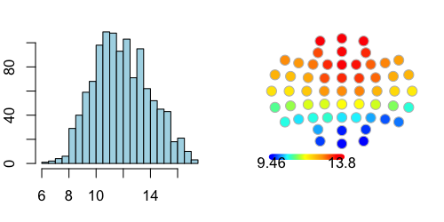
The profile of SO (peak-to-peak) amplitude shows a somewhat similar topography:
f1( "SO_P2P")
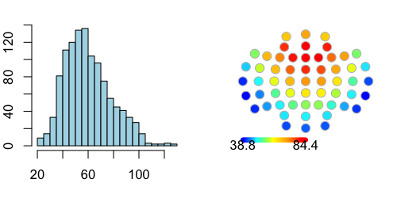
SO duration (in seconds) shows that faster SO are more centrally located: the average frequency is around 0.8 seconds (i.e. 1.25 Hz), although note that this value (as all metrics here) is dependent on a) the choice of (relative) amplitude and other thresholds, and b) the fact that here we are looking at N2 sleep only, i.e. not including N3.
f1( "SO_DUR")
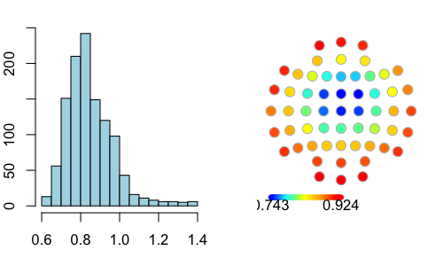
Finally, the slope (here defined as the rising slope from negative peak to the negative-to-positive zero-crossing) shows a topography that (unsurprisingly) is broadly similar to both amplitude and duration:
f1( "SO_SLOPE")
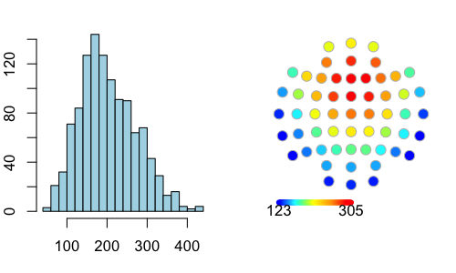
We'll include these SO metrics in the association models below, testing for sex differences.
Spindle/SO coupling
Finally, the SPINDLES command, when combined with so and nreps, calculates measures of spindle/SO temporal coupling:
-
the density of SO-coupled (and uncoupled) spindles
-
the extent of gross overlap (of any overlap between a spindle and SO at the same channel)
-
the magnitude of SO-phase coupling (i.e. non-random SO phase at spindle peaks, point of maximal amplitude)
-
the average SO phase angle at spindle peaks (which is a circular variable, output in degrees)
The overlap and coupling magnitude are evaluated via a randomization
process, which controls for the total number of spindle/SO events as
well as other properties (using nreps constrained shuffles of the
intervals). Based on the null distribution, Luna reports these as Z
scores (_Z suffix).
| Metric | Description |
|---|---|
CDENS |
Density of SO-coupled spindles (count per minute) |
UDENS |
Density of SO-uncoupled spindles (count per minute) |
COUPL_OVERLAP_Z |
Spindle/SO gross overlap (Z score) |
COUPL_MAG_Z |
Spindle/SO phase coupling of spindles that overlap a SO (Z score) |
We'll extract and save these metrics:
destrat out/spindles1.db +SPINDLES -r F CH \
-v CDENS UDENS COUPL_OVERLAP_Z COUPL_MAG_Z > res/spso.coupl
And then load them into R:
d <- read.table( "res/spso.coupl" , header=T , stringsAsFactors=F)
We'll generate two sets of means also stratifying for fast and slow spindles:
vars <- c("CDENS","UDENS","COUPL_OVERLAP_Z","COUPL_MAG_Z" )
a <- aggregate(d[,vars], by=list(CH=d$CH, F=d$F), FUN=mean, na.rm=T)
head(a)
CH F CDENS UDENS COUPL_OVERLAP_Z COUPL_MAG_Z
1 AF3 11 0.7328740 1.2064197 2.939962 4.339846
2 AF4 11 0.7017171 1.1167132 2.961210 4.755433
3 AFZ 11 0.7146199 1.0754468 2.889355 3.857676
4 C1 11 0.3874622 0.7494142 2.824646 2.326131
5 C2 11 0.3378465 0.6966176 2.542018 2.171104
6 C3 11 0.3848440 0.7785307 2.894494 2.640781
...
We'll amend the f1() function from above
f1 <- function(v) {
par(mfcol=c(2,2), mar=c(3,2,1.5,1) )
xlim = range( d[ ,v] )
hist( d[ d$F==11 ,v], breaks=20, main="", col="#FF7276", xlab="", xlim=xlim)
hist( d[ d$F==15 ,v], breaks=20, main="", col="lightgreen", xlab="", xlim=xlim)
ltopo.heat( a$CH, a[,v], f = a$F==11, sz=2, show.leg=T )
ltopo.heat( a$CH, a[,v], f = a$F==15, sz=2, show.leg=T )
}
In the plots below, the top row shows results for slow spindles (target F = 11 Hz) and the bottom row shows the results for fast (target F = 15 Hz) spindles.
The topography of SO-coupled spindles is broadly similar to that of all spindles: predominantly frontal and central for slow and fast spindles respectively:
f1( "CDENS")
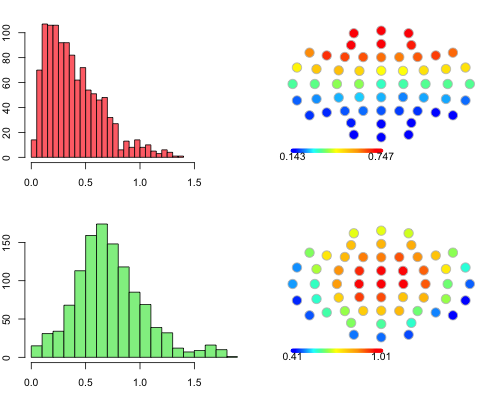
Likewise, "uncoupled" spindles (i.e. those that are not even partially overlapped by a detected SO) have broadly similar topographies - although note that the absolute number of uncoupled spindles is larger than coupled spindles (which will largely reflect often arbitrary choices in the thresholds used to detect both SO and spindles):
f1( "UDENS")
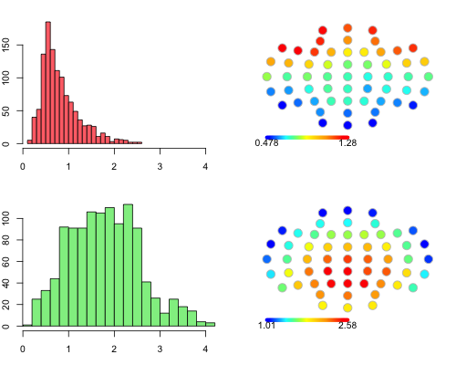
Looking at the overlap metrics, we see that a) the distributions are shifted above zero, implying that most people/channels show an above-chance level of coupling between spindles and SO, and b) above-chance overlap is greater at frontal and central locations, broadly similar for both fast and slow spindles:
f1( "COUPL_OVERLAP_Z")
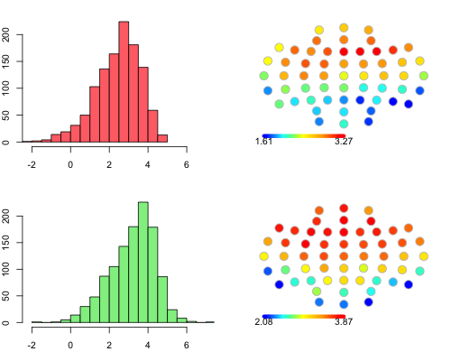
Finally, the spindle/SP phase coupling metrics likewise show overall levels of above-chance phase-coupling, although this is particularly strong for fast spindles. The topographies of above-chance phase-coupling more reflect the topographies of spindle densities:
f1( "COUPL_MAG_Z")
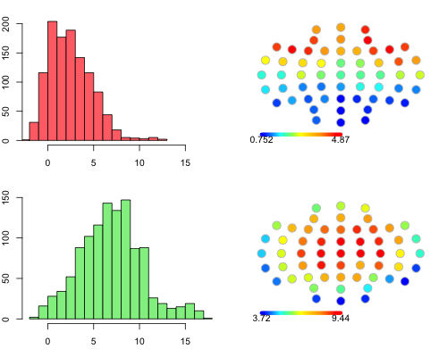
As above, these metrics (in res/spso.coupl) will be included in the association models below.
Summary
In this section we've detected spindles and slow oscillations (SO), and have evaluated their distributions, topographies and temporal coupling. We've recapitulated some of the core observations made in the literature with respect to the differential topographies of fast and slow spindles.
We've also seen some evidence of differential effects (particularly spindle frequencies) in males versus females. We'll return to some of these issues later, in a planned next step section, where we consider some more nuanced issues around spindle detection and characterization.
Although beyond the scope of this walkthrough, one can combine the
SPINDLES command with the dynam submodule, to derive metrics
quantifying changes within and between NREM cycle in all these primary
spindle/SO metrics.
In the next section we'll consider model-based predictive analysis.